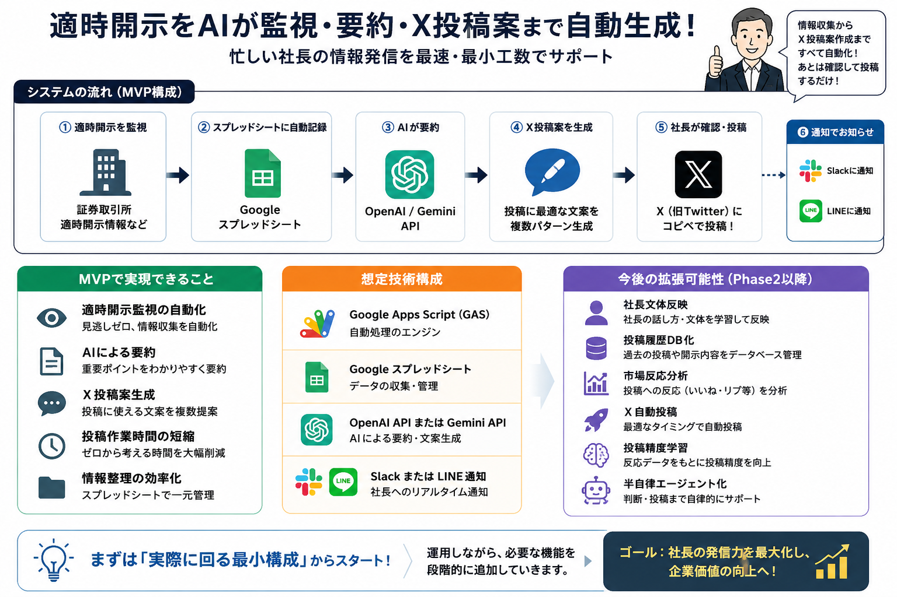

情報収集から投稿案作成までを最小工数で支援
まずは"実際に回る最小構成"から構築し、
運用しながら必要機能を段階的に追加していく形を想定しています。

まず動かすことを最優先に、必要な機能を厳選して構築します。
既存サービスを組み合わせることで、初期コストを抑えながら素早く立ち上げられます。
運用データをもとに、必要と感じた順に追加していく形を想定しています。
実運用を通して必要機能を整理・拡張していく形を推奨しております。
完璧なシステムを最初から作るのではなく、
動くものを素早く届け、現場の声をもとに育てていく開発スタイルです。